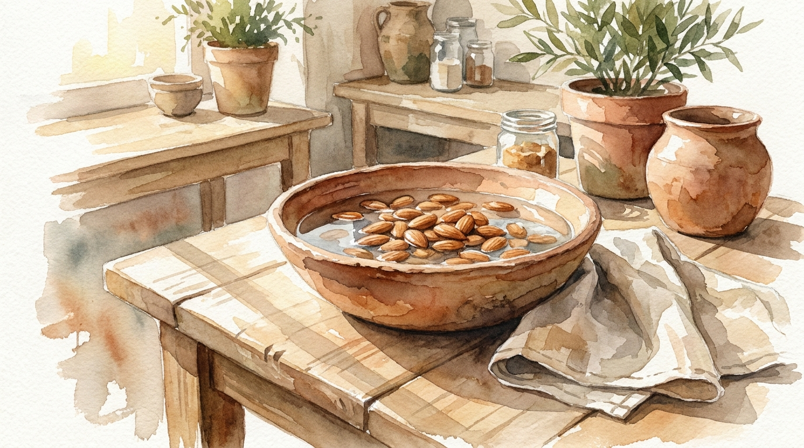
Mantra Field Books · No. 11
The practice, nut by nut — with the timings, the temperatures, the food safety nobody writes about, and the butter at the end.
A raw almond out of a packet is a hard, dense, slightly bitter thing that your jaw has to argue with. The same almond, soaked overnight and then dried slowly until it snaps, is a different food: lighter, sweeter, crisper, cleaner-tasting, and gone from the bowl considerably faster.
That transformation is real, it is easy, it costs nothing but time and a little water, and this book is about doing it properly.
The practice is called activating, and it comes to most of us through the raw food kitchens — Auroville, Goa, Ubud, and every festival kitchen in between, where somebody always has jars of something soaking on a windowsill. It belongs to a wider way of living: growing food, moving the body, swimming long and slow, walking in mountains, sitting down to eat without hurry. This book assumes that context rather than explaining it.
The tradition gives a rationale — that soaking wakes a dormant seed, softens what the seed uses to defend itself, and makes the nut easier on the gut. I set that out in chapter two the way the tradition holds it, because it is what practitioners believe and it is why the practice exists.
I also, at the back, say exactly what the published trials do and do not support, because every book in this series ends that way. If you want the short version before you start: the strongest, best-evidenced reasons to activate nuts are taste, texture, digestibility in your own experience, and what it does for nut butter. Those are good reasons and they are enough.
Chapter one
Soak, rinse, dry. The whole practice in one page.
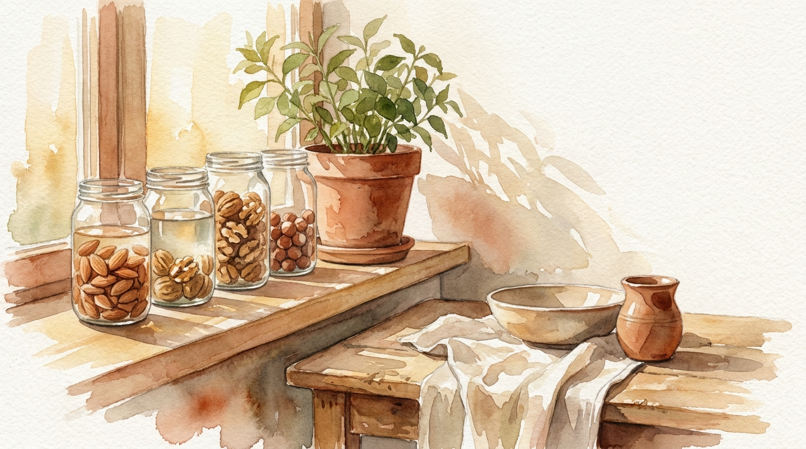
Three steps and one overnight. That is the entire method, and everything else in this book is detail on top of it.
This works on raw nuts only. Roasted nuts are already cooked, will not wake up, and will turn to unpleasant mush. Buy raw, and buy from somewhere with turnover so they are not already old — chapter nine explains why that matters more than you would think.
A dehydrator is the one piece of equipment worth buying if you do this regularly, because it holds a low temperature steadily for a whole day, which most domestic ovens cannot.
Chapter two
The seed's own logic, as the kitchens understand it.
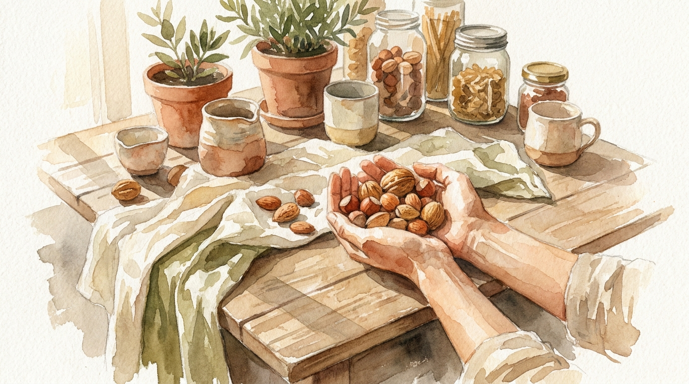
Here is the reasoning as the raw kitchens hold it, and it is worth understanding on its own terms because it is coherent and it is why anybody started doing this.
A nut is a seed. Its entire job is to survive — drought, animals, digestion, time — and then to grow when conditions are right. A dormant seed is a locked box, and it is locked deliberately.
Seeds hold their phosphorus as phytic acid, which binds minerals such as iron, zinc and calcium. They also carry enzyme inhibitors which keep the seed's own metabolism switched off until it is time, and in almonds a skin containing tannins, which are astringent and bind proteins. All three make sense from the seed's point of view: stay closed, stay unappetising, wait.
The signal the seed waits for is water. Rain means it is time to grow. In the tradition's account, soaking is that signal — the seed begins to shift from storage into growth, its own phytase enzymes stir, the inhibitors ease, and the astringent almond skin loosens and slips off between your fingers. What you are eating is no longer a locked box but a seed that has begun to open.
Then the drying. Rather than let germination continue into a sprout, you stop it — gently, at a temperature low enough to keep the food raw — and what you get is a nut caught at the moment of waking, and dry enough to keep.
Whatever the chemistry does, you can taste and feel the difference, and that part needs no defending. A soaked and properly dried almond is crisper and sweeter than a raw one. The bitter skin is gone. It is lighter in the mouth and less work to chew. Many people find it sits better on the stomach. And it makes a noticeably better butter, which is chapter ten.
The fuller picture of what the published research supports is in What I could not verify at the back, where this series always puts it. Read it before you make claims to anybody else.
Chapter three
The soak, and the three things that change it.
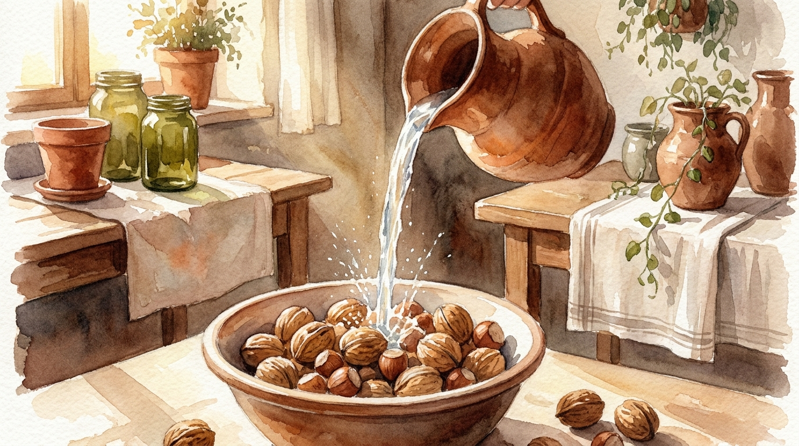
Use clean drinking water and plenty of it — at least twice the volume of the nuts, because they swell substantially and any left uncovered will spoil rather than soak. Filtered if your tap water is heavily chlorinated, though this matters less than the internet suggests.
The traditional instruction is roughly one teaspoon of good unrefined salt per cup of nuts. The stated reason is that salt helps deactivate the inhibitors. Whether or not it does that, it demonstrably improves the flavour of the finished nut, and a lightly salted activated almond is a considerably better thing to eat than an unsalted one. Use sea salt or rock salt, not iodised table salt.
The variable that matters most, and the one people get wrong in the same direction every time: too long.
An over-soaked nut goes slimy, smells faintly sour, loses flavour into the water and never dries crisp. Cashews are notorious — a cashew left overnight is a ruined cashew. The full table is chapter six; the general shape is that hard dense nuts want eight to twelve hours and soft oily ones want two to four.
Warmth speeds everything up, including the things you do not want. In a hot climate — and this book expects some of its readers to be in one — cut the times, or soak in the fridge. In Goa in April, twelve hours on a counter is not the same twelve hours as in Zagreb in February.
Do not skip it and do not keep the water. The soaking water carries whatever has come out of the nuts along with any surface dust, and it is cloudy for a reason. Rinse until the water runs clear and the nuts stop feeling slippery.
Chapter four
Temperature, hours, and how to know when it is done.
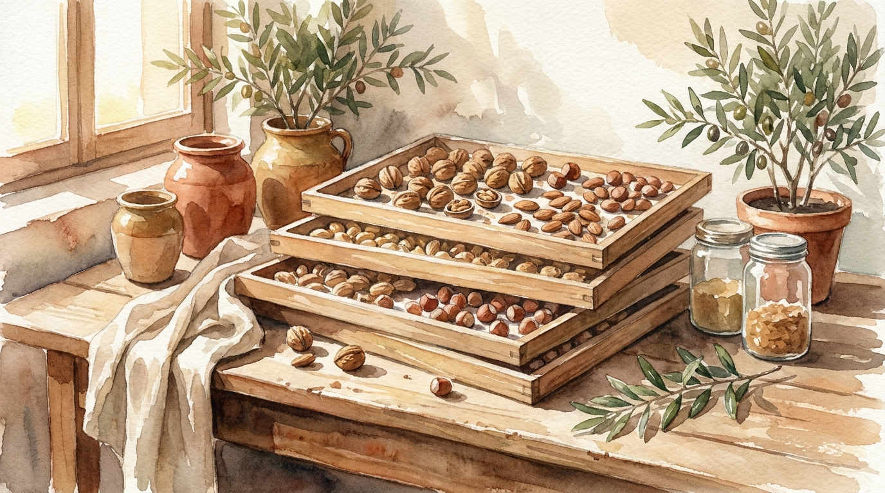
This is where the crunch is made or lost. A nut dried too fast is case-hardened — crisp outside, damp inside, and it will go off. A nut dried too slowly in a humid room grows mould. A nut dried enough is a small perfect thing.
The raw food convention is 40–46°C (105–115°F), chosen to stay below the temperature at which enzymes are held to be destroyed. If keeping the food raw matters to you, stay in that band and accept a longer dry.
If it does not, drying at 50–65°C is faster, safer from a bacterial point of view (chapter five), and the nut still tastes excellent. This is a real choice with a real trade-off and the book is not going to make it for you.
One test, and trust nothing else: take one out, let it come to room temperature, and bite it. It must snap. Not bend, not yield, not feel faintly leathery in the middle. Warm nuts feel crisper than they are, which is why you let it cool first.
If in any doubt, give it another two hours. Nothing is lost by over-drying and a great deal is lost by under-drying, which is the subject of the next chapter.
Chapter five
The chapter the blogs leave out, and the one that matters most.
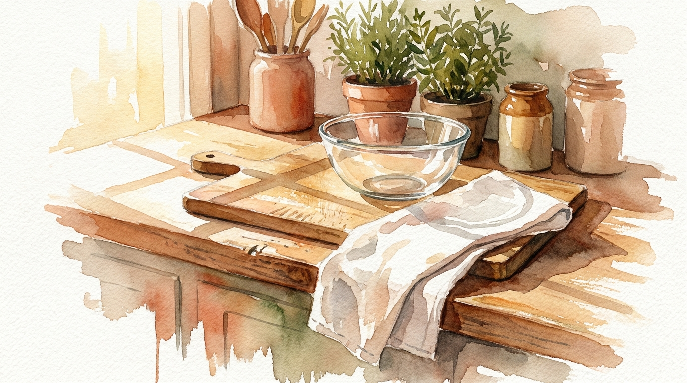
I have read a great many enthusiastic articles about activating nuts and almost none of them mention this. It deserves a chapter, and if you read only one chapter in this book, read this one.
Bacteria multiply fastest in food that is wet, warm and left alone. Activating nuts involves soaking them in water for up to twelve hours, then holding them damp at 40–46°C for another twelve to twenty-four. That temperature band sits inside the range where bacteria grow most readily.
This is not theoretical. Raw almonds have been the source of documented salmonella outbreaks, which is why almonds sold in some countries are pasteurised as a matter of law. A nut is an agricultural product that has been on the ground.
Drying at 40–46°C keeps the food raw and takes longer through the risk zone. Drying at 60°C+ is safer and is no longer raw. Both are legitimate. What is not legitimate is doing the low-temperature version without knowing that this is the trade you are making, and that is the state most people are in.
Chapter six
Every common nut, with its soak time and its quirk.
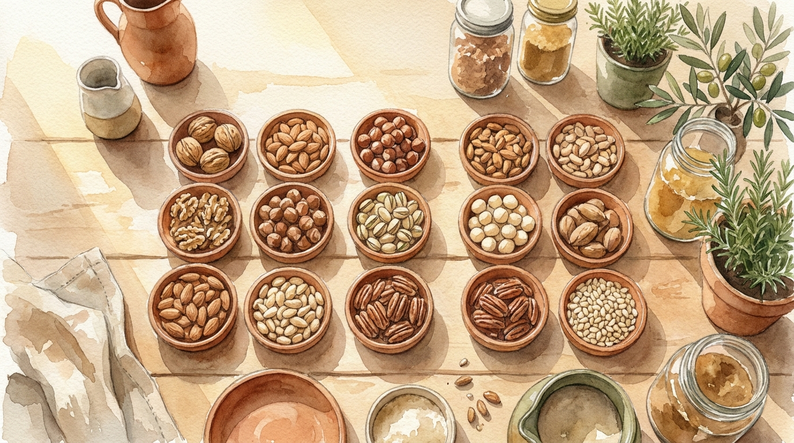
Times are the traditional kitchen figures, for room temperature. In heat, cut them or use the fridge. Dry everything at 40–46°C unless you have chosen otherwise.
| Nut | Soak | Salt | Dry | Notes |
|---|---|---|---|---|
| Almond | 8–12 h | yes | 12–24 h | The classic. Skins slip off between finger and thumb afterwards — worth doing, it removes the astringency. |
| Hazelnut | 8 h | yes | 12–24 h | Dense. Rub in a cloth after drying to shed the papery skin. |
| Walnut | 4–6 h | yes | 12–18 h | Soaking noticeably reduces the bitterness. Very high in oil — goes rancid fastest of all. |
| Pecan | 4–6 h | yes | 12–18 h | Becomes remarkably sweet. The one to give to sceptics. |
| Pistachio | 4–6 h | yes | 12–18 h | Shelled only. Keeps its colour well. |
| Brazil nut | 4–6 h | optional | 12–18 h | See chapter seven. Selenium — this one has a genuine limit. |
| Cashew | 2–3 h max | light | 10–14 h | Never overnight. Goes slimy and sour. Set a timer. |
| Macadamia | 2 h or none | light | 10–12 h | Very low in the compounds this is aimed at. Mostly not worth soaking. |
| Pine nut | 2–4 h or none | light | 10–12 h | Delicate and expensive. Easy to ruin. |
| Peanut | 8–12 h | yes | 12–24 h | A legume, not a nut, and behaves more like one. Buy fresh — this is the one where mould risk is highest. |
Do not try to activate everything at once. Pick one nut, and run it on a weekly loop: set it soaking in the evening, rinse and load the dryer in the morning, jar it the following evening. Two minutes of attention on each of three days, and there is always a full jar.
Once that is automatic, add a second nut on the same schedule. Almonds and walnuts together will cover most of what you want.
Chapter seven
Cashews, Brazils, macadamias, pine nuts.
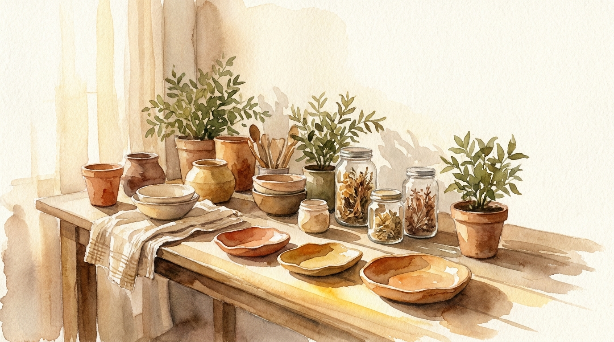
Worth knowing if raw food matters to you. The cashew grows inside a shell containing caustic oils related to those in poison ivy, and it cannot be sold in that shell. Every cashew you have ever eaten, including every one labelled raw, has been steamed or heat-treated to get it out safely. "Raw cashew" means unroasted, not unheated.
This is not a scandal and the nut is still excellent. But a raw food kitchen that runs on cashew cream should know that cashews are the one ingredient in the room that has already been cooked.
They also soak faster than anything else and spoil fastest. Two to three hours, maximum. Overnight is a bowl of grey slime.
Brazil nuts are extraordinarily rich in selenium — a single nut can contain more than an entire day's requirement, and the amount varies enormously depending on the soil the tree grew in. Selenium is essential and it is also genuinely toxic in excess, producing hair and nail loss, gastrointestinal problems and nerve damage over time.
A few Brazil nuts a day is a supplement. A handful every day is a risk. Most guidance lands around one to three nuts daily. Activate them if you like — but the quantity matters far more than the preparation, and this is the only nut in the book where that is true.
Both are low in the compounds this practice targets, both are very high in oil, and both are expensive. Soaking gains little and the risk of ending up with a soft, oily, faintly rancid result is real. If you activate them at all, keep it short, dry them thoroughly, and eat them soon.
The oilier and softer the nut, the less it wants this and the faster it spoils. Hard dense nuts — almonds, hazelnuts, peanuts — take to activation best and keep best afterwards. Soft oily ones are already close to what you were trying to achieve and mostly want leaving alone.
Chapter eight
The nutrition, generously and accurately.
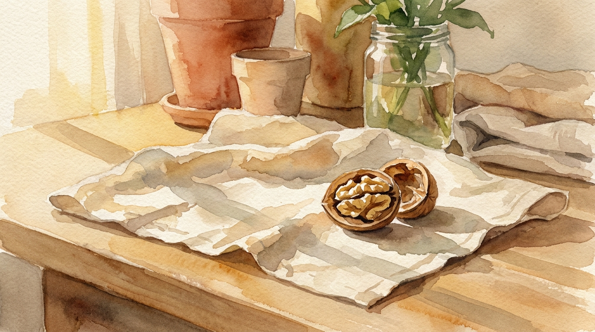
A nut is an entire organism's start-up capital: fat for energy, protein for structure, minerals for machinery, and a set of protective compounds, all packed for an indefinite wait. That is why it is such a dense food.
Nuts are consistently associated with good health outcomes. Large observational studies link regular nut consumption with lower cardiovascular risk, and this is one of the more robust findings in nutritional epidemiology. It applies to nuts as such — not specifically to activated ones.
Phytic acid is not simply a villain. The same compound the practice aims at also behaves as an antioxidant, and there is research suggesting protective effects. If a food is doing you good, it may be doing it partly with these compounds rather than despite them. Hold the anti-nutrient framing lightly.
Activated nuts are lighter and crisper, which makes them very easy to keep eating. A jar of them is still a jar of one of the most energy-dense foods available. This is not a reason to be anxious about it — it is a reason to eat them as food rather than as background.
Chapter nine
Rancidity, and why activated nuts need more care.
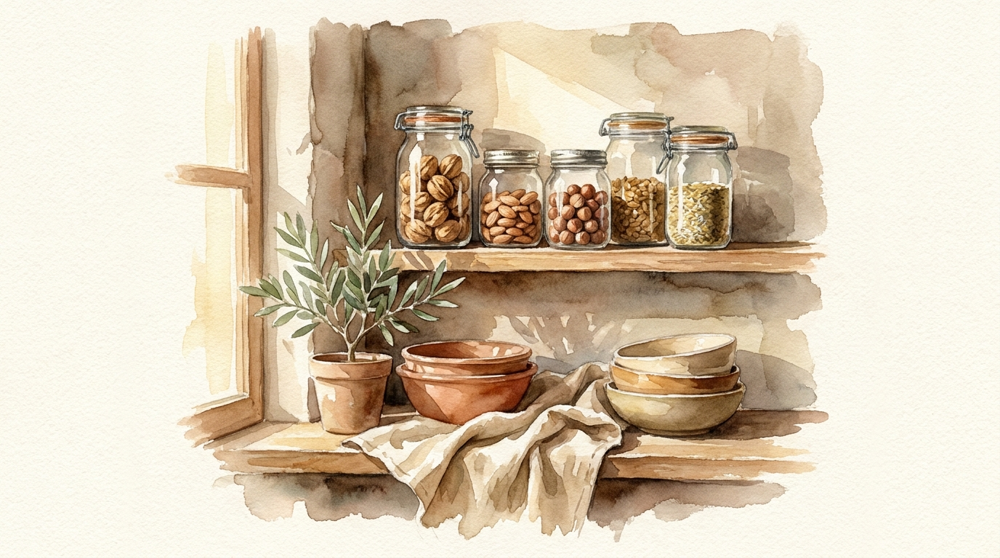
The enemy is oxygen, helped by warmth and light. Nut fats oxidise, and a rancid nut tastes of old paint, cardboard and bitterness. Most people have eaten so many mildly rancid nuts that they think that is what walnuts taste like.
You have soaked them, swollen them, disturbed their structure and then dried them. More surface is exposed to air than in an intact raw nut. Activated nuts do not keep as long, and treating them like the packet they came from is the usual mistake.
Rough working life, kept properly: a month or two at room temperature for the harder nuts, considerably less for the oily ones, several months refrigerated, and up to a year frozen. Make batches you will actually eat rather than an impressive quantity you will find at the back of a cupboard in the spring.
Chapter ten
Nut butter from activated nuts, in a small 1100 W machine.
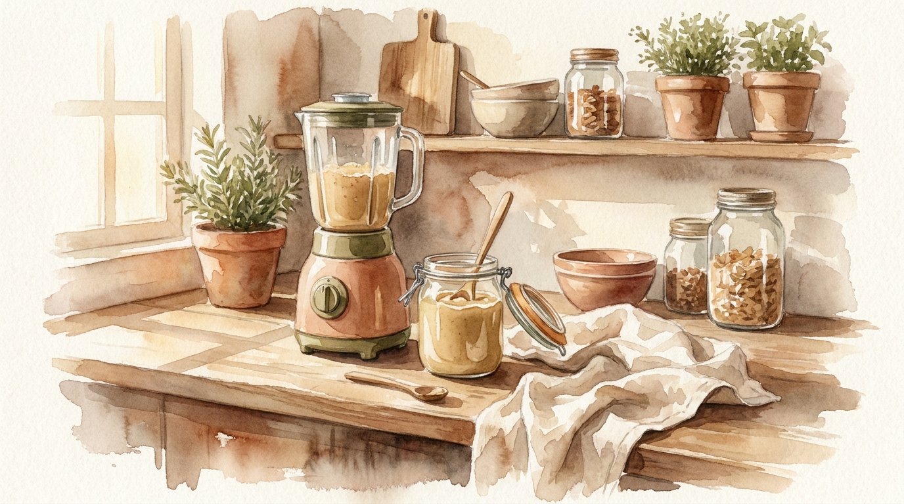
This is where activation pays off most obviously. Activated nuts are drier, more brittle and structurally looser than raw ones, so they break down faster, release their oil more readily, and produce a butter that is lighter in colour, sweeter, and noticeably less claggy.
Nut butter is not a recipe. It is nuts, ground long enough. They pass through crumbs, then a stiff paste that looks like a mistake, then — as friction warms the oil out of the cell walls — they suddenly turn glossy and pour. The whole skill is continuing past the stage where it looks wrong.
The machine I am describing is a Ninja Foodi Power Nutri Mixer 2-in-1 (CB100EU) — 1100 W, a 700 ml cup, and a 400 ml bowl fitted with a power stirrer, with Auto-iQ programmes for blend, crush, mix and power-mix. Any similar personal blender behaves the same way, and the technique matters more than the brand.
The important thing to understand: this is a personal blender, not a full-size high-power jug. It will make excellent nut butter in small batches, and it will overheat if you treat it like a food processor.
Almond — stiff, takes the longest, the most rewarding. Cashew — fastest and creamiest, ready almost before you expect it. Hazelnut — releases oil readily; rub the skins off first. Peanut — the easiest of all. Walnut and pecan — very quick because they are so oily, and best made in small amounts and eaten soon.
If it will not come together, the nuts were too dry or too cold, or there is not enough in the bowl. A spoonful of neutral oil rescues it and is not cheating. Salt at the end, and a little honey or maple if you want it sweet — but taste it plain first, because activated nut butter is sweeter than you expect and often needs nothing.
Store it in a jar in the fridge. It will separate, which is what butter with no emulsifier in it does, and means you made it right. Stir it back together.
Chapter eleven
Seeds, buckwheat, coconut — the same method, shorter.
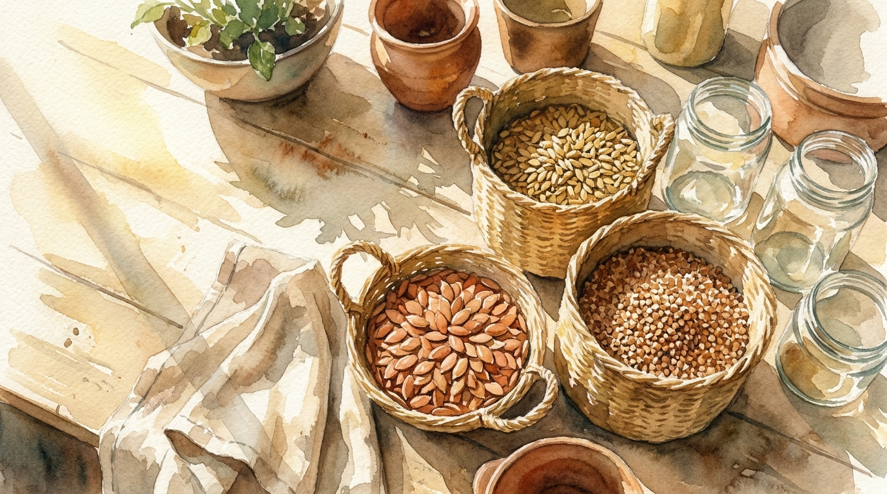
Everything in this book applies to seeds and grains, and in their case the underlying chemistry is on considerably stronger footing — grains and pulses have far more of their own phytase activity than tree nuts do, which is why soaking has been standard practice for them across the world for thousands of years.
| Seed or grain | Soak | Notes |
|---|---|---|
| Pumpkin seeds | 6–8 h | Excellent activated. Dry until they snap. |
| Sunflower seeds | 2 h | Short. They go bitter if left. |
| Sesame | 8 h | Tiny — use a fine sieve or you will lose them. |
| Buckwheat | 30–60 min | Rinse extremely well; it goes slimy. Dried, it becomes "buckinis" — the crunchiest thing in this book. |
| Oat groats | 8–12 h | Whole groats, not rolled oats. |
| Flax and chia | do not | They form gel rather than soaking. Different technique entirely. |
Coconut is a separate case: not soaked, but fresh coconut dried at low temperature makes chips far better than anything sold, and the same dehydrator does it.
And if you let a soak run on into actual sprouting — rinsing twice a day until a tail appears — you have moved into a different practice with a genuinely different chemistry, and the germination changes considerably more than a single overnight soak does. Buckwheat, sunflower and pumpkin seeds all sprout readily. Most tree nuts will not, because they have been through processes that leave them no longer viable.
Chapter twelve
Why a jar on a windowsill is worth something.
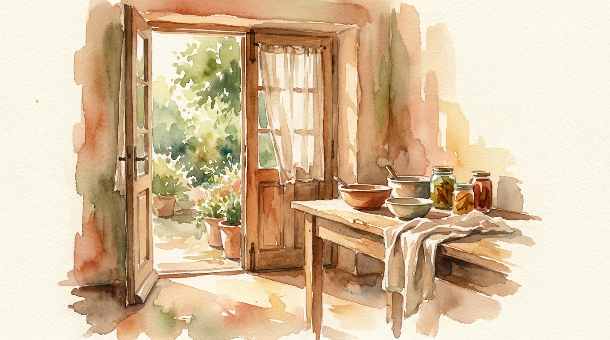
There is a version of this practice that is only about outcomes — optimised, measured, defended against sceptics. I think that version misses most of what it is for.
Activating nuts takes three days of small attentions and about four minutes of actual work. You set something in water in the evening. You come back in the morning and your hands are in cool water and slipping skins off almonds. The next evening you fill a jar. The food is genuinely better at the end, and something else has happened too: for three days you have been in an unhurried relationship with what you are going to eat.
That is the same shape as most of the practices this book's readers already keep. A long slow swim where the whole point is the stroke rather than the distance. A walk in the mountains that takes the time it takes. Sitting in the morning. Learning a rhythm on a drum by repeating it until it stops being difficult. None of these are efficient and all of them work on the person doing them.
A kitchen full of jars quietly doing things is a kitchen that assumes tomorrow. It is the same assumption as planting a tree, and it is the opposite of the assumption behind buying a packet.
Start with almonds, this evening. One jar, water, a little salt. In the morning, rinse them and slip the skins off with your fingers — that part alone is worth the exercise. Dry them until they snap, eat one, and decide for yourself.
That is a better basis for a practice than anything anybody, including this book, can tell you about it.
Apparatus
Where the numbers came from.
Consulted 20 August 2026.
House rule
Including the evidence on anti-nutrients, in full.
Every Mantra field book ends here. This one has more to say than most, and it is the most useful page in the book.
Chapter two sets out the traditional rationale, because it is what the practice is built on and it deserves a fair statement. Here is what the published research actually shows, and anyone repeating the claim in public should know it.
It does not mean stop. The taste is better, the texture is better, the skins come off, the butter is better, and many people find the nuts sit more easily — and personal digestive experience is real even where a trial did not find an average effect. Those reasons are sufficient and this book stands on them.
It means do not tell people this cures anything, and do not present the mineral argument as settled science, because someone will check and you will lose the argument along with your credibility on everything else you have written.